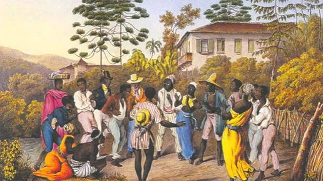
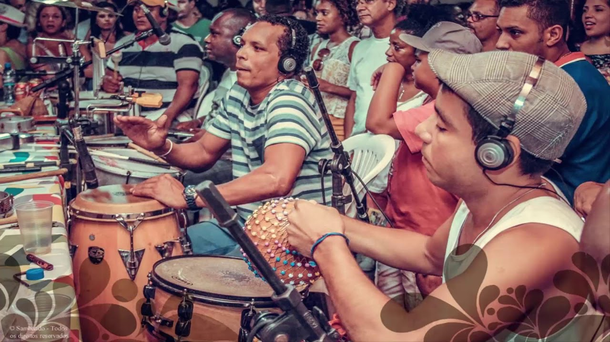
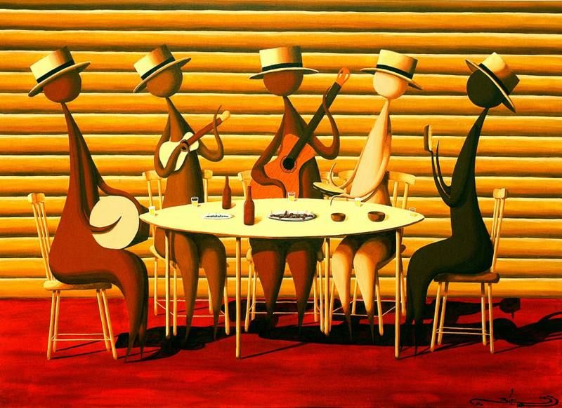

musicas
samba
O samba nasceu na Bahia, no século 19, da mistura de ritmos africanos. Mas foi no Rio de Janeiro que ele criou raízes e se desenvolveu,
mesmo sendo perseguido.Durante a década de 1920, por exemplo, quem fosse pego dançando ou cantando
samba corria um grande risco de ir batucar atrás das grades. Isso porque o samba era ligado à cultura negra,
que era malvista na época. Só mais tarde é que ele passou a ser encarado como um símbolo nacional,
principalmente no início dos anos 40, durante o governo de Getúlio Vargas. Nessa música brasileiríssima,
a harmonia é feita pelos instrumentos de corda, como o cavaquinho e o violão. Já o ritmo é dado, por exemplo,
pelo surdo ou pelo pandeiro. Como o passar do tempo, outros instrumentos, como flauta,
piano e saxofone, também foram incorporados, dando origem a novos estilos de samba. “À medida que o samba evoluiu,
ele ganhou novos sotaques, novos modos de ser tocado e cantado. É isso que faz dele um dos ritmos mais ricos do mundo”,
afirma o músico Eduardo Gudin.



funk
para quem não sabe, o funk surgiu através da música negra norte-americana no final da década de 1960.
Na verdade, o funk se originou a partir da soul music, tendo uma batida mais pronunciada e algumas influências do R&B,
rock e da música psicodélica.
Um ritmo em constante mudança, o funk surgiu como uma “mistura” entre os estilos R&B, jazz e soul.
No início, o estilo era considerado indecente, pois a palavra “funk” tinha conotações sexuais na língua inglesa. Tempos depois,
o funk acabou incorporando a característica,
apresentando as seguintes peculiaridades: ritmo mais lento e dançante, sexy, solto e com frases repetidas.